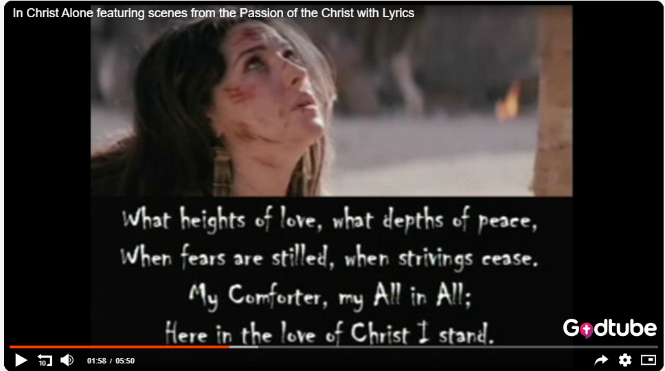

Blessed Lord's Day, brothers — and my condolences in advance to any Raiders fans in the group.
Sitting in church this morning got me thinking about what the experience is actually for. A short list, in no particular order: it's for God, not for me. It's for singing and worship. It's for brothers praying for each other — a few of you have been praying for what I've come to call my thorn in the flesh, and I feel it. And every so often it's for something that just stops you, like the “In Christ Alone” video I saw this week, cut together with footage from The Passion of the Christ.

Our pastor has been going expositorily through Nehemiah, and this week landed on chapter 4 — the rebuilding of Jerusalem's wall under active opposition (Neh 4:12–23). His application: Christians today are called to build and defend God's walls too — our families, our children, our country, our churches — using the armor of God and the sword of the Spirit. He spent real time on the attacks our youth are under right now: gender identity, sexuality, the collapse of family, absent fathers. The charge was to build God's Kingdom, not our own little kingdoms.
That dovetailed with something I watched this week: a short talk by Charlie Kirk answering the question, “Why do you say we're a Christian nation?” — despite the word “God” never appearing in the Constitution (it does appear, indirectly, four times in the Declaration of Independence). He quoted John Adams: “The Constitution was only written for a moral, religious people; it is wholly inadequate for the government of any other.”
On the side, I've been working through a personal study on Worship tied into this week's BSF lesson — Nebuchadnezzar demanding worship despite already having everything a king could want. And if you haven't seen it, Clint Eastwood's testimony about his own conversion is worth ten minutes of your time.
God bless you guys. — Erv
Comments